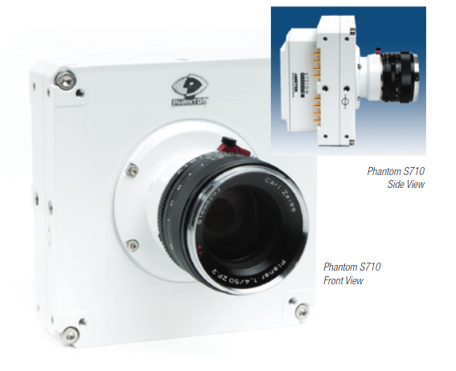
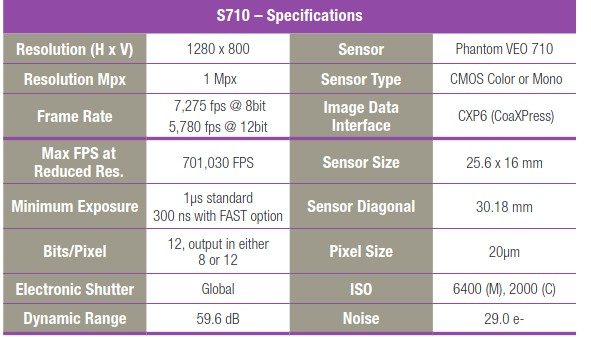
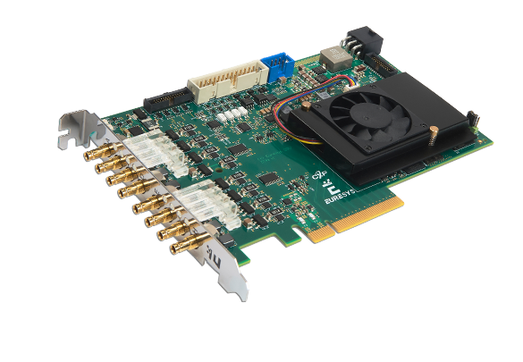
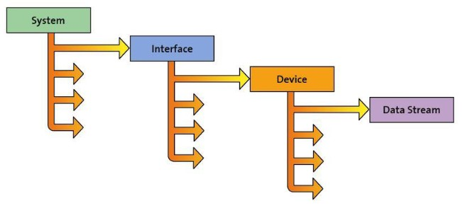

Phantom S710


- Mono
- Replaced by S711
Euresys
FrameGrabber
GenTL Interface
- 2 x Euresys Octo CoaXPress
- FPGA DMA Transfer
- EGrabber C++ SDK
- RDMA Transfer
- Programable FPGA
Euresys C++ SDK
Acquiring Buffers
Buffer 0
Buffer 1
Buffer 2
Delivered
Processed
Returning
Ready
Buffers